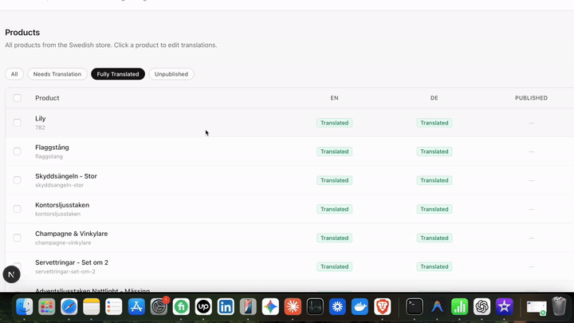
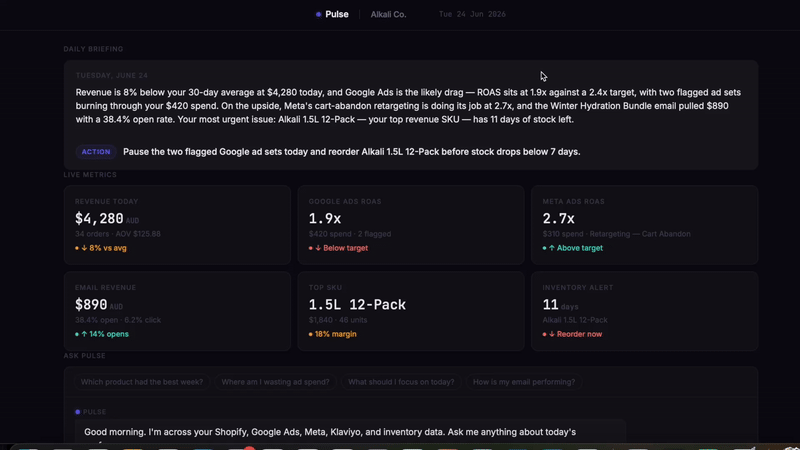
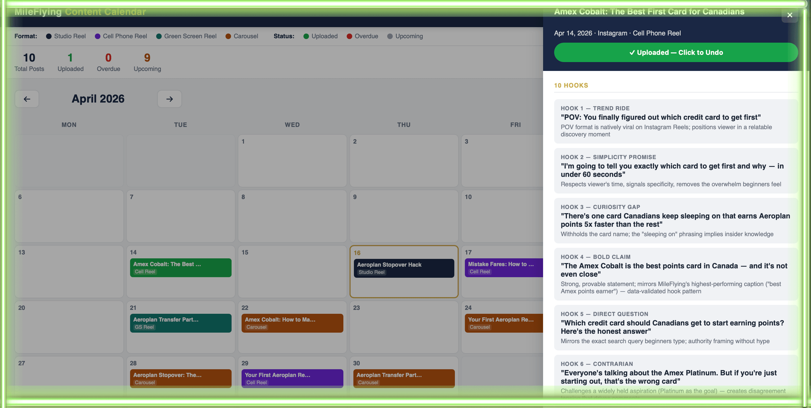

I build the automations your ops team wishes they had.
Custom Claude Code systems and AI workflows for founder-led ecommerce brands: translation pipelines, BI dashboards, lead capture, competitor intel. Shipped and running in production, not slideware.
What happens when you click that button
A focused engagement: I map your manual workflows, flag what's automatable, and ship the first working system inside the sprint. Not a 40-page deck.
Book an Automation AuditYour Stack, Automated
I build directly into your existing ecosystem using industry-leading infrastructure and tools.



Four systems. Zero fluff.
I don't sell "AI strategy." I write and ship the workflow, wire it into your stack, and hand you something that runs without me in the room.
Audit sprints from $[PRICE]
Multi-store sync systems
Translation and publishing pipelines that keep product content, pricing, and copy consistent across every storefront, no more manual re-uploads per region.
Custom BI dashboards
One source of truth for revenue, ad spend, and channel performance, replacing the Frankenstein spreadsheet your team dreads updating every Monday.
AI lead capture
Branded, tracked capture forms that plug directly into your ad and analytics stack, so a lead doesn't sit in an inbox untracked.
Competitor intel & content planning
Automated tracking of competitor moves paired with a hook-generation engine, built to keep a content calendar full without a strategist glued to spreadsheets.
All of the above are built as Claude Code agents wired directly into your stack, not a chatbot bolted onto the front end.
Real systems, real clients.
Every project below is live or was live in production. No composite case studies, no "results may vary."
Keeping Skultuna in sync across three storefronts
Built via a Stockholm agency partner: a multi-market translation and publishing sync for Skultuna, a Shopify Plus retailer, keeping roughly 800 SKUs consistent across three stores, US, Norway, and a dedicated B2B storefront. One publish action now propagates translated product content everywhere, so an update in one market lands correctly in every other store, automatically.
- Eliminated manual re-entry of translated product copy across all 3 stores
- Single publish action propagates to US, Norway, and the B2B storefront
- Version-consistent copy across roughly 800 SKUs, zero drift

Pulse's multi-channel reporting, without the spreadsheet
Killed the manual multi-channel spreadsheet pulled together by hand from ad platforms, Shopify, and email. Replaced it with a single dashboard that refreshes itself, so leadership sees live numbers instead of waiting on a report each Monday.
- Consolidated four data sources into one live report
- Removed a recurring weekly manual reporting task entirely
- Built on the client's existing stack, no new platform to learn

A tracked lead-capture form for Gotain, built and ready to ship
A branded lead-capture form matched to Gotain's site, with Meta Pixel, Google Tag Manager, and GA4 tracking pre-wired out of the box. Built as a self-initiated prototype and reusable tool, an estimate was sent for the engagement but never confirmed, so this is shown here as a completed build, not a live client deployment.
- Branded capture form matched to the client's site
- Meta Pixel, GTM, and GA4 tracking pre-wired
- Built as a reusable tool, ready to deploy
MileFlying's content calendar & hook generator
A planning tool that tracks competitor content and status across formats: Studio, Cell Phone, Green Screen, Carousel, and generates a bank of tested hook angles per post, so the calendar never runs dry.
- 10-hook bank generated per content slot, ranked by pattern
- Full month view with format and upload status at a glance
- One-click status tracking from upcoming to uploaded

I write the code myself. No agency layer, no account manager relay.
I'm David Akilo, an AI systems engineer who builds Claude Code automations for D2C ecommerce brands that are tired of manual workflows eating their week. No decks, no "AI transformation roadmaps." I sit with your actual stack, find the repetitive task costing you hours, and ship a working system for it.
Most projects on this site are systems I built and shipped for a real operator: a Stockholm agency's retail client, a media planning team. A couple are self-initiated builds and prototypes, clearly labeled as such where they appear.
Questions before you book.
The short answers, no sales-deck spin.
Does this replace our existing tools or developers?
No. Every system I build works alongside what you already have. It's wired directly into your existing stack, Shopify, your ad platforms, your dev team's tools, not a replacement for a dev team or a rip-and-replace of tools you already rely on.
How fast do projects typically ship?
An Audit & Build Sprint ships the first working system inside the sprint itself, that's the point of it. Larger, multi-system builds take longer and get scoped per project once we know exactly what needs to be automated.
Are ongoing or retainer engagements available?
Yes. Past the initial sprint, ongoing and retainer engagements are available for teams who want a standing engineer on their automation systems rather than a one-off build.
What tech stacks do you support?
I build primarily into Shopify, Klaviyo, Meta Ads, and n8n, with systems hosted on Vercel and Supabase, and Claude Code as the automation engine underneath. If your stack looks different, tell me what it is, the point is wiring into what you already run, not migrating you to something new.
What happens after the audit sprint ships?
You own what's built, it keeps running without me in the room. From there, most clients either scope a second system, or move to an ongoing retainer if there's a steady pipeline of automation work.